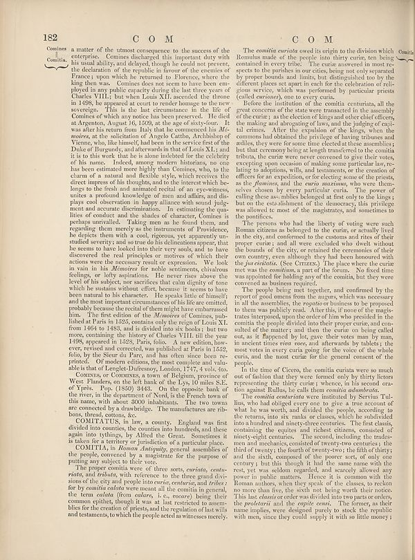

Scan ID britannica:309f765b1ecc83e0a7f7762e44b4a927a7555443:train:1102
Image SHA-256 918dd1676cc2e6299e46d7d5610d5c3ee90a2c5fe401b45e30691f8e313293bc
Status: ok. Running header: 182 COM COM (catchword). Removed page furniture: Page-header: 182 COM COM.
PDF · raw Parse reply · LaTeX
Entries: E0091 COMITATUS COMITIA

| # | Class | Box | Parse 3.5 | Used text | Source |
|---|---|---|---|---|---|
| 1 | Text | [0.1055, 0.0805, 0.5537, 0.6633] | Comlima a matter of the utmost consequence to the success of the enterprise. Comimies declared this important duty with his usual ability and delayed, through he could not prevent, the defendants of the symbolic in favor of the enemies of France; upon which he served to Florence, where the king then was. Comine does not seem to have been emp- played in any public capacity during the last two years of Charles VHL; that Louis XLI assumed the disease in 1498, he repeated at court to render homages to the new sorcery. This is the hat contractors in the life of Comimies of which my notice has been | a matter of the utmost consequence to the success of the enterprise. Comines discharged this important duty with his usual ability, and delayed, though he could not prevent, the declaration of the republic in savour of the enemies of France; upon which he returned to Florence, where the king then was. Comines does not seem to have been employed in any public capacity during the last three years of Charles VIII.; but when Louis XII. ascended the throne in 1498, he appeared at court to render homage to the new sovereign. This is the last circumstance in the life of Comines of which any notice ha | super_vl |
| 2 | Text | [0.1621, 0.6641, 0.5527, 0.7477] | Contracts or Contracts a town of Telephone, province of West Flanders, on the left bank of the Lys, miles SE, of Treés, Pop, (Cion) 3448. To the opposite bank of the river, in the department of Nord, is the French team of this name, with about 3000 inhabitants. The two towns are concerned to a drawbridge. The manufactures are ribbon, thread, catons, Sc. | Comines, or Commines, a town of Belgium, province of West Flanders, on the left bank of the Lys, 10 miles S.E. of Ypres. Pop. (1850) 3443. On the opposite bank of the river, in the department of Nord, is the French town of this name, with about 3000 inhabitants. The two towns are connected by a drawbridge. The manufactures are ribbons, thread, cottons, &c. | super_vl |
| 3 | Text | [0.1631, 0.7461, 0.5547, 0.7945] | COMITALUS, in law, a county. England was first divided into countries, by counties into hundreds, and there again into tytting, by Alfred the Great. Sometimes it is taken for territory of jurisdiction of a particular place. | COMITATUS, in law, a county. England was first divided into counties, the counties into hundreds, and these again into tythings, by Alfred the Great. Sometimes it is taken for a territory or jurisdiction of a particular place. | super_vl |
| 4 | Text | [0.1641, 0.7937, 0.5557, 0.8313] | COMITA, in Roman University, general assemblies of the people, covered by a registered for the purpose of putting any subjects to their vote. | COMITIA, in Roman Antiquity, general assemblies of the people, convened by a magistrate for the purpose of putting any subject to their vote. | super_vl |
| 5 | Text | [0.1611, 0.8305, 0.5518, 0.9289] | The proper combina were of three sons _and certain, contra_- rivals, and tribute, with reference to the three grand divisions of the city and people in _nurcarta_, centuries, and critics far y cowmila celebrity men meant all the coming general, the term colonism (from editor, i.e., courtesy), being their common epithet, though it was at last restricted to assemblies for the creation of priests, and the regulation of lat wills and tenaments, to which the people acted as witnesses merely. | The proper comitia were of three sorts, curiata, centuriata, and tributa, with reference to the three grand divisions of the city and people into curiae, centuriae, and tribes: for by comitia calata were meant all the comitia in general, the term calata (from calare, i. e., vocare) being their common epithet, though it was at last restricted to assemblies for the creation of priests, and the regulation of last wills and testaments, to which the people acted as witnesses merely. | super_vl |
| 6 | Text | [0.5645, 0.0828, 0.9512, 0.1805] | The comitia curvida owed its origin to the division which Romulus made of the people into thirty curtu, ten being consumed in every tribe. The curtu answered the next te- aspects to the problem is our cities, being not only separated by proper bounds and limits, but distinguished too by the different places set apart in each for the celebration of religious service, which was performed by particular priest called _extremely,_ one to every citizen. | The comitia curiata owed its origin to the division which Romulus made of the people into thirty curiae, ten being contained in every tribe. The curiae answered in most respects to the parishes in our cities, being not only separated by proper bounds and limits, but distinguished too by the different places set apart in each for the celebration of religious service, which was performed by particular priests (called curiones), one to every curia. | super_vl |
| 7 | Text | [0.5664, 0.1812, 0.9521, 0.3945] | Before the institution of the comitia contents, all the great concerts of the state were transacted in the assembly of the curtu; as the election of kings and other chief officers, the major and beginning of lives, and the judging of qui- ultricutes. After the repetition of the Bishop, when the commons had obtained the privilege of bring tribune and thus, they were the ones now elected at these assemblages, but that ceremony being at length transferred to the comitia tribus, the curtu were never converted to give their votes, reception venue, and making some particular law, relating to an adap | Before the institution of the comitia centuriata, all the great concerns of the state were transacted in the assembly of the curiæ; as the election of kings and other chief officers, the making and abrogating of laws, and the judging of capital crimes. After the expulsion of the kings, when the commons had obtained the privilege of having tribunes and ædiles, they were for some time elected at these assemblies; but that ceremony being at length transferred to the comitia tributa, the curiæ were never convened to give their votes, excepting upon occasion of making some particular law, relating | super_vl |
| 8 | Text | [0.5674, 0.393, 0.9531, 0.5109] | The parents who had all liberty of voting over such Romans citizens and belonged to the curtu, or actually lived in the city, and confirmed to the customs and their of their proper cursu and all were excluded who dwell without the bounds of the city, or retained the ceremonies of their own country even, although they had been consumed with the _ja créaviside_ (See Grimes). The place where the cursus met was the conditions a pard of the forum. No fixed time was appointed for holding pay of the comitia, but they were conversed as business required. | The persons who had the liberty of voting were such Roman citizens as belonged to the curia, or actually lived in the city, and conformed to the customs and rites of their proper curia; and all were excluded who dwelt without the bounds of the city, or retained the ceremonies of their own country, even although they had been honoured with the jus civitatis. (See CITIZENS.) The place where the curia met was the comitium, a part of the forum. No fixed time was appointed for holding any of the comitia, but they were convened as business required. | super_vl |
| 9 | Text | [0.5684, 0.5117, 0.9541, 0.6539] | The people being met together, and murted by the request of good news from the magnent, which may necessary in all the assemblies, the cognitive business to be proposed to them was publicly read. After this, if none of the misti- trates requested, upon the order of him who presided in the comitia, the people divided into their proper cursu, and can be pulled off the matters and then the curtu being called out, as it happened by lot, gave their votes man by man, in ancient times were now, and afterwards by tables; the most votes in every curts going for the voice of the whole curtu, and the mos | The people being met together, and confirmed by the report of good omens from the augurs, which was necessary in all the assemblies, the rogatio or business to be proposed to them was publicly read. After this, if none of the magistrates interposed, upon the order of him who presided in the comitia the people divided into their proper curiae, and consulted of the matter; and then the curiae on being called out, as it happened by lot, gave their votes man by man, in ancient times viva voce, and afterwards by tablets; the most votes in every curia going for the voice of the whole curia, and the | super_vl |
| 10 | Text | [0.5693, 0.6547, 0.9473, 0.7016] | In the time of Clover, the comitia curtains were a much out of isolation that they were formed only only thirty literary representing the thirty curtu; instance, in his second ex-tion region Rulls, the calls them commitate indefinite. | In the time of Cicero, the comitia curiata were so much out of fashion that they were formed only by thirty lictors representing the thirty curiae; whence, in his second oration against Rullus, he calls them comitia adumbrata. | super_vl |
| 11 | Text | [0.5703, 0.7008, 0.9482, 0.9313] | The comitia center was inserted by Servita Tul-lia, who had obliged every one to give a time account of that he has saved, and divided the people, according to the returns, that six rows or cases, which is subdivided into a hundred and minety-three centuries. The first class, containing the copies and indeed citizens, consisted of ninety-seven centuries, the third of twenty-the fourth of twenty-two, the fifth thirty; did the study, composed of the persort, and only one century, but this thought it had the same name with the rest, yet was seldom regarded, and scarcely allowed any power in publi | The comitia centuriata were instituted by Servius Tullius, who had obliged every one to give a true account of what he was worth, and divided the people, according to the returns, into six ranks or classes, which he subdivided into a hundred and ninety-three centuries. The first class, containing the equites and richest citizens, consisted of ninety-eight centuries. The second, including the tradesmen and mechanics, consisted of twenty-two centuries; the third of twenty; the fourth of twenty-two; the fifth of thirty; and the sixth, composed of the poorer sort, of only one century; but this tho | super_vl |
Britannica scans: National Library of Scotland, CC0 1.0. Wikipedia text: Wikipedia contributors, CC BY-SA 4.0, revision links on each page. Generated 2026-10-18T13:26:14+00:00.